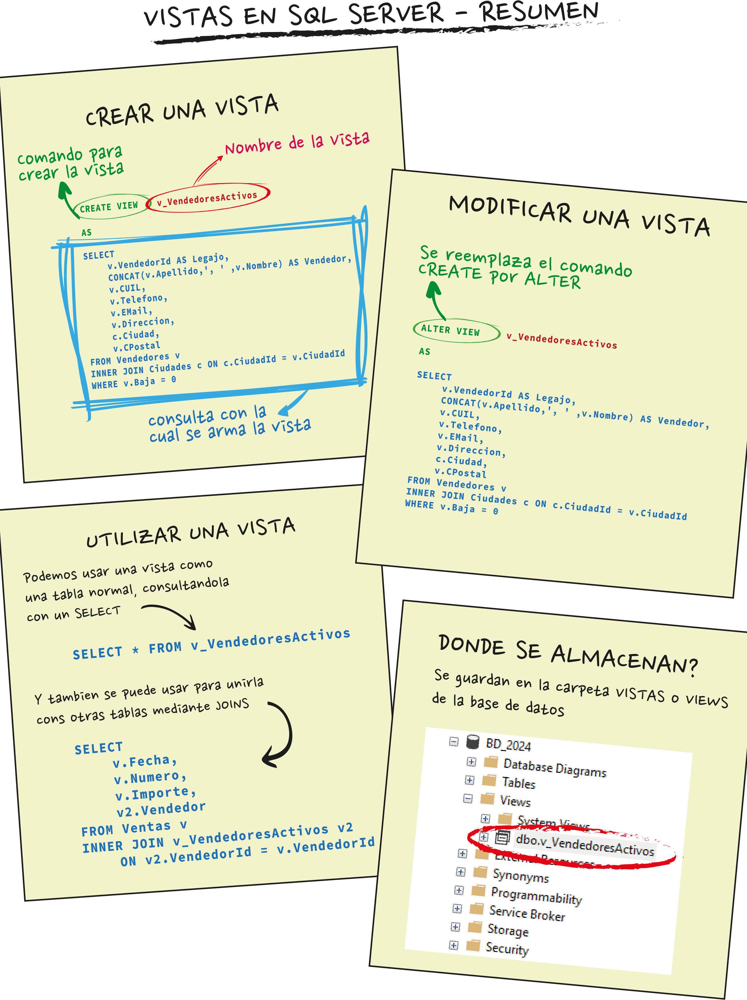
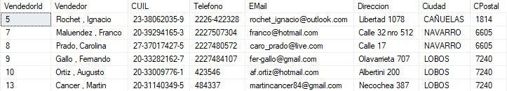
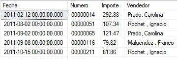
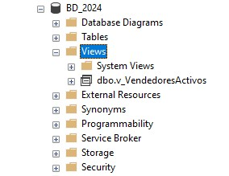

01
Simplificar consultas
Encapsulan consultas SELECT complejas en un objeto reutilizable y reducen errores al reescribir código.
En esta clase vemos qué es una vista, para qué sirve, cómo se crea con CREATE VIEW, cómo se consulta y cómo puede modificarse con ALTER VIEW.
Una vista es una tabla virtual: no guarda datos propios, sino que muestra datos provenientes de una o más tablas físicas de la base de datos.
Almacena filas reales dentro de la base de datos. Es el origen de los datos.
Guarda una consulta y muestra datos obtenidos desde tablas. Su resultado se actualiza al consultarla.
Las vistas ayudan a simplificar el trabajo con consultas repetidas o complejas, y también pueden mejorar la forma en que se presenta la información a distintos usuarios.
Encapsulan consultas SELECT complejas en un objeto reutilizable y reducen errores al reescribir código.
Presentan una versión más clara de los datos sin exponer toda la estructura interna de las tablas.
Permiten mostrar solo ciertas columnas o filas, evitando que algunos usuarios accedan a datos sensibles.
Evitan repetir consultas con joins, filtros o cálculos cada vez que se necesita el mismo resultado.
Para crear una vista se utiliza la sentencia CREATE VIEW, seguida del nombre de la vista, la palabra AS y la consulta SELECT que formará su resultado.
CREATE VIEW v_NombreVista
AS
SELECT
T1.Columna,
SUM(T2.Columna) AS Total
FROM Tabla1 T1
INNER JOIN Tabla2 T2 ON T2.ID = T1.ID
GROUP BY T1.Columna;El nombre de la vista suele comenzar con v_ para reconocerla rápidamente dentro de la base de datos.
CREATE VIEW v_VendedoresActivos
AS
SELECT
v.VendedorId AS Legajo,
CONCAT(v.Apellido, ', ', v.Nombre) AS Vendedor,
v.CUIL,
v.Telefono,
v.EMail,
v.Direccion,
c.Ciudad,
v.CPostal
FROM Vendedores v
INNER JOIN Ciudades c ON c.CiudadId = v.CiudadId
WHERE v.Baja = 0;Esta vista muestra solo vendedores activos y presenta el nombre completo del vendedor en una columna más legible.

Una vez creada, una vista se consulta igual que una tabla. Se puede usar en un SELECT simple o combinarla con otras tablas mediante JOIN.
SELECT *
FROM v_VendedoresActivos;El resultado muestra las columnas definidas dentro de la vista, no necesariamente todas las columnas de las tablas originales.

v_VendedoresActivos.SELECT
v.Fecha,
v.Numero,
v.Importe,
v2.Vendedor
FROM Ventas v
INNER JOIN v_VendedoresActivos v2
ON v2.Legajo = v.VendedorId;En este ejemplo, la vista se usa como origen de datos para traer el nombre legible del vendedor en una consulta sobre ventas.

Las vistas creadas se almacenan dentro de la base de datos, en la carpeta Vistas o Views. Si necesitamos cambiar su definición, usamos ALTER VIEW.
ALTER VIEW v_VendedoresActivos
AS
SELECT
v.VendedorId AS Legajo,
CONCAT(v.Apellido, ', ', v.Nombre) AS Vendedor,
v.CUIL,
v.NroDoc,
v.Telefono,
v.EMail,
v.Direccion,
c.Ciudad,
v.CPostal
FROM Vendedores v
INNER JOIN Ciudades c ON c.CiudadId = v.CiudadId
WHERE v.Baja = 0;En este caso se agrega la columna NroDoc a la vista, manteniendo el resto de la consulta.
CREATE VIEWSe usa para crear una vista nueva en la base de datos.
ALTER VIEWSe usa para reemplazar la definición de una vista ya existente.

Las vistas sirven para guardar consultas y reutilizarlas de forma clara. Esta tabla resume los puntos principales.
| Elemento | Uso principal | Ejemplo corto |
|---|---|---|
| Vista | Tabla virtual basada en una consulta guardada. | v_VendedoresActivos |
CREATE VIEW |
Crea una vista nueva. | CREATE VIEW v_Nombre AS SELECT... |
SELECT |
Permite consultar la vista como si fuera una tabla. | SELECT * FROM v_Nombre; |
JOIN |
Permite combinar una vista con otras tablas o vistas. | INNER JOIN v_Vista v |
ALTER VIEW |
Modifica la definición de una vista existente. | ALTER VIEW v_Nombre AS SELECT... |
Este quiz repasa el concepto de vista, su sintaxis básica, el uso con SELECT y la diferencia entre crear y modificar una vista.